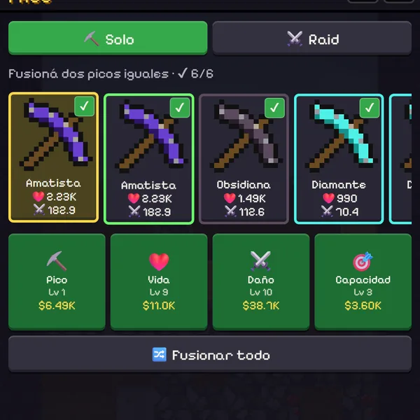
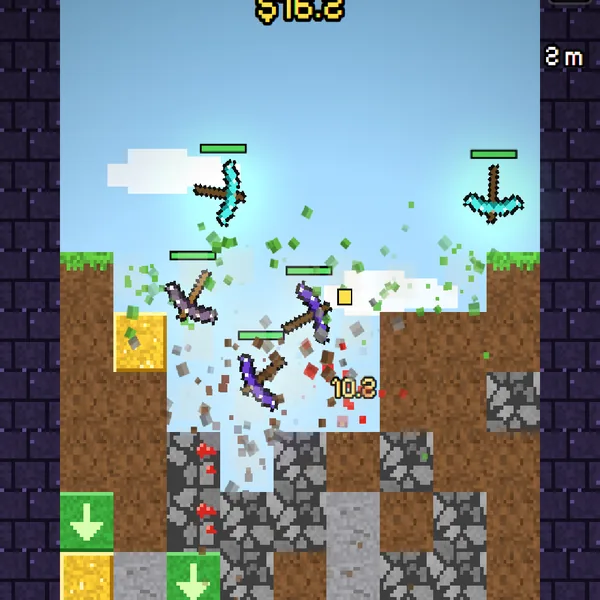
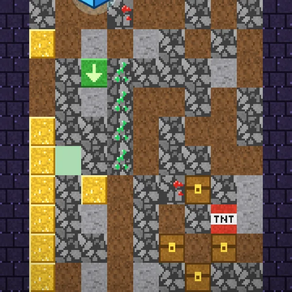
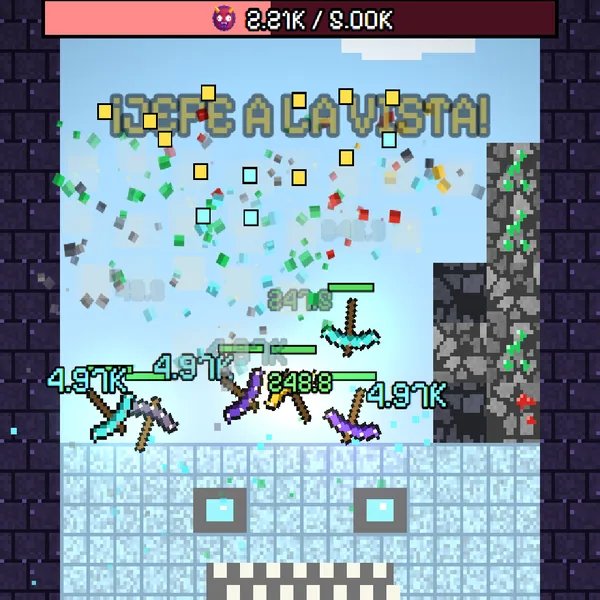
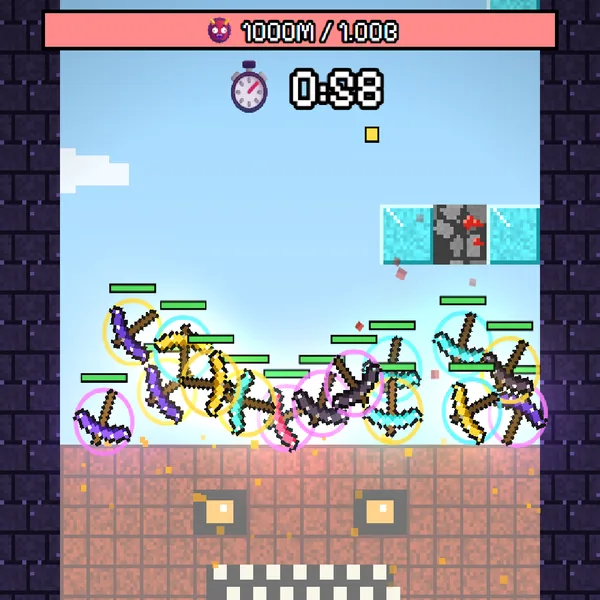

⛏️ Solo
Tu mina, a tu ritmo. Cada partida suma plata, récords y avance hacia el próximo jefe. Los picos nunca se pierden.
Soltá picos. Rompé bloques. Bajá cada vez más hondo.
Comprá y fusioná picos, miralos caer y romper todo, vencé a un jefe cada 100 m y subí en el ranking de la semana.

Comprá picos y juntá dos del mismo nivel para subirlo. Mejorá vida, daño y cuántos soltás.

Los picos caen solos y rebotan contra los bloques. Mantené apretado para ir a x2.

Los minerales dan plata, la TNT vuela todo, la flecha verde empuja el pico hacia abajo y los cofres traen sorpresas.

Cada 100 m un jefe custodia el paso. Vencelo para arrancar desde ahí, y desde los 200 m reiniciá por Gemas.
Cierra en —. Los 10 mejores de cada tabla ganan cubos 🧊 para skins y auras.
Cargando…
Cada 100 m cambia el mundo: bloques nuevos, minerales nuevos y un jefe que custodia la entrada. Después de los 800 m llega la zona infinita, que paga el doble.
Fusioná dos iguales para tener el siguiente. Los más pesados pegan más fuerte y caen más rápido.
Tu mina, a tu ritmo. Cada partida suma plata, récords y avance hacia el próximo jefe. Los picos nunca se pierden.

De 2 a 4 jugadores comparten una mina y tienen 1 minuto para bajar a un jefe. Se entra con código, link o desde la lista pública. ¿Solo? Te acompaña un fantasma con tus picos.
Hay más modos en camino. Cuando haya uno para probar, lo vas a ver acá primero.
Más allá de cada partida, el juego te hace avanzar y te da motivos para volver.
Vencé al jefe de 200 m y reiniciá por Gemas: mejoras permanentes de valor, vida, daño, capacidad y suerte. También se ganan con misiones, logros, la racha diaria y el Raid.
En la mina flotan cubos: juntalos con tus picos, hasta 20 por día. Compran skins y auras en la Tienda, o con 5 abrís un cofre ruleta con una exclusiva. Los repetidos devuelven 2 🧊.
Tres misiones diarias, una racha que nunca te vuelve a cero, decenas de logros y ganancias mientras no jugás.
Dejá que las partidas sigan solas por el 10% de lo que ganó la anterior. Lo frenás cuando quieras.
Cuando estemos probando algo nuevo, desde acá vas a poder entrar a la versión de prueba del juego. Guarda aparte, así que nunca toca tu progreso.
Sí. Sin anuncios ni compras con dinero. Todo se gana jugando.
No. Las skins y auras son cosméticas y el servidor recalcula cada récord del ranking.
En tu navegador, en tu dispositivo. No hay cuentas: si borrás los datos del sitio o cambiás de equipo, empezás de nuevo.
Sí, está pensado para pantallas verticales táctiles. En la PC se juega con el mouse.
Solo un ID anónimo, tu apodo y tus mejores partidas, para el ranking. Más detalle en la página de privacidad.